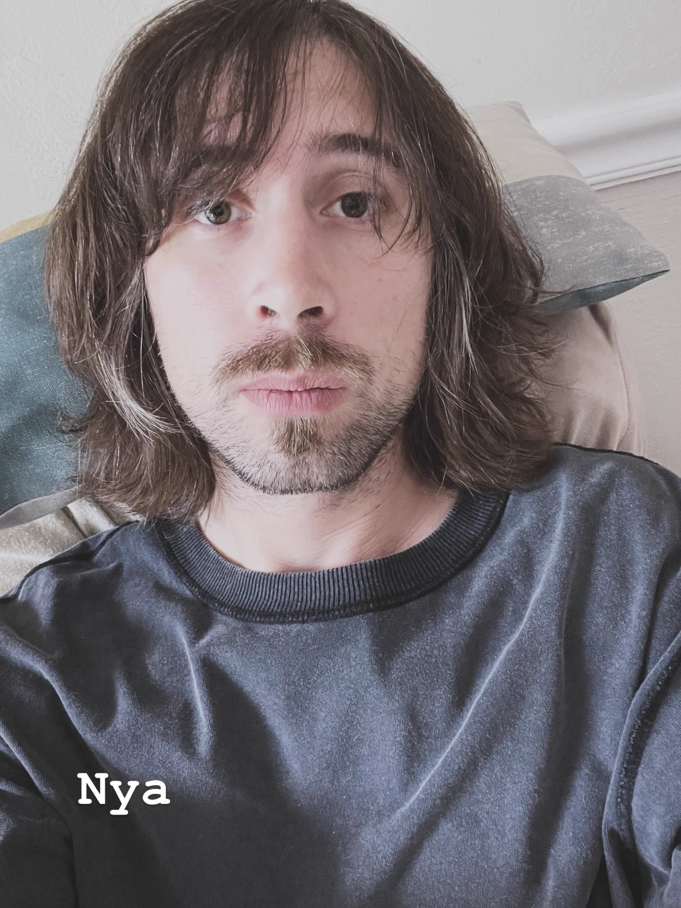

I'm Julian Ranieri, a Bay Area native, musician, audio engineer, software developer, tea enthusiast, otaku, gamer, gardener, and mushroom hunter.
I grew up around the strange mix of nature, technology, music, and subculture that makes the Bay Area feel like the Bay Area. A lot of my life has followed that shape: playing drums and guitar, recording music, hunting for mushrooms after rain, tending plants, drinking tea, and building tools when the thing I want does not quite exist yet.
Music is one of the main threads. I play, produce, record, and engineer, and I run my music site as a home for that side of my work. I also work on sound design and audio tools through SF Audio Guild, where practical audio work and experimental taste tend to meet.
Software is another thread. I like building systems that feel specific, durable, and useful: a tape-style recorder, small desktop utilities, encrypted chat infrastructure, and the Far Reach Co. virtual tabletop platform. I care about clean architecture and performance, but I care just as much about whether a tool has a point of view and feels good to use.
I like work that has a little bit of a world inside it: creative tools, music projects, tabletop games, small communities, publishing experiments, and websites that still feel handmade.
Web Developer, Co-Founder
I am the developer behind a real-time collaborative virtual tabletop platform with WebSocket collaboration, role-based permissions, asset handling, Stripe payments, Discord tooling, PostgreSQL migrations, Redis-backed scaling, and production infrastructure.
Sound Design, Audio Tools, Production
Sound design and audio production work for games and media, plus custom tooling around recording, editing, and practical creative workflows.
Web, Infrastructure, Desktop Tools
I've worked across web applications, infrastructure, automation, React Native, backend services, desktop utilities, OCR/image processing tools, audio software, and performance/security cleanup for small teams and clients.
To get in touch, send an email to JumpingAfterRain@Gmail.com.